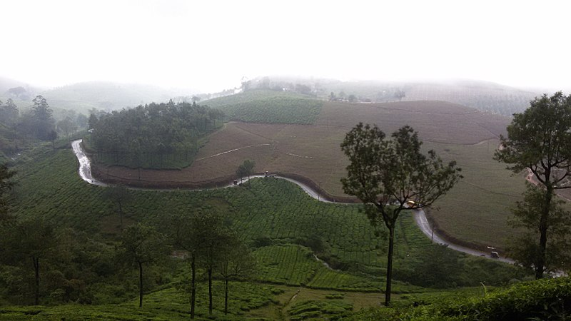

Idukki
(Est. - 26 Jan 1972)
The district headquarters of Idukki district lies in the town of Painavu. Idukki is a central district of Kerala. It shares boundaries with Tamil Nadu in the East, Thrissur in the North, Eranakulam and Kottayam in the West and Pathanamthitta in the South. It is a very beautiful region and its main attractions are the wildlife sanctuaries and hill stations.
These are two unique destinations to visit in Idukki.

Munnar
